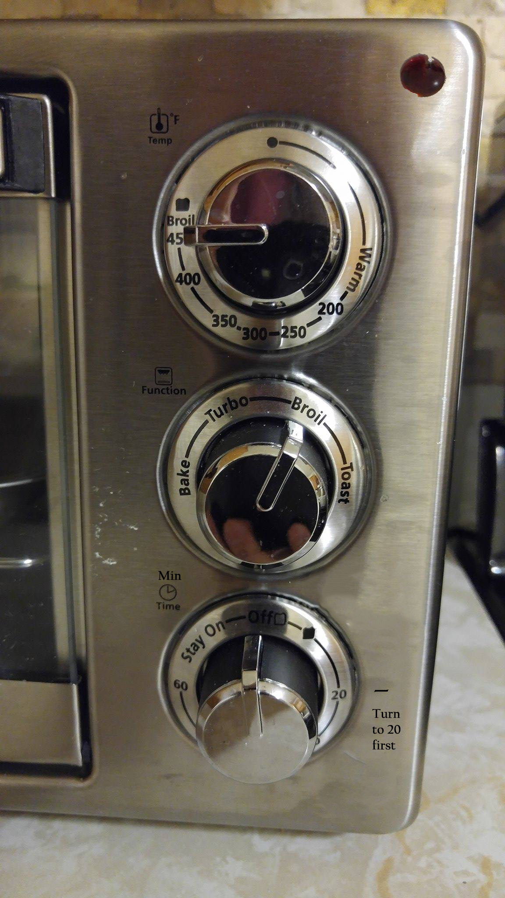

1.HandleThe handle is well constructed to be intuitive to use. There is not much room for confusion when trying to use the toaster oven. 2.Stainless Steel FinishThe finish is appealing to the eyes and looks more high end. It is also easier to clean than a painted coating which could chip off or burn. 3.Notes on the upper left of each knob This is a good inclusion because it adds more detail to each knob's function without adding too much clutter around the actual circle. 4.Indicator light The indicator light only turns on and off not having any additional colors which keeps the simplicity. Also does not require the user to understand what other colors such as "green" would mean. In some other toaster ovens, green would mean that the temperature inside the oven is equal to the temperature that the user set it to. But with relative values thats the toaster has, this option is not really necessary. Also the toaster is rarely used to bake where preheating is important. 5.Location of knobs Having the knobs vertical gives an illusion of the steps you would take, going from top to bottom. First adjusting the temp, then the mode, then finally turning on the oven itself. As opposed to a horizontal knob design where a user might jump back and forth between the knobs, this one is more user friendly.
1.Glossy FinishAlthough nice to look at, it makes it a bit more difficult than needed when adjusting the knobs. Depending on the amount of light in the room, there is a good amount of glare on the numbers and letters. 2.Note to upper right of timer The note is necessary because it is not obvious that you have to turn the dial first to 20 before stopping at the correct time. The only bad part is that the text is a little obscure and easy to miss. So a normal user might just turn to the time they want and leave it at that while assuming that it works. 3.No indicator of minutes Around the timer there is no text or symbol indicating that the numbers on the dial represent minutes, at first glance it is possbile to question that it is meant for seconds rather than minutes. This is a bit misleading. 4.Location of light indicator The location of the light indicator is kind of hidden, mostly if the oven is placed somewhere lower and the user is taller. Asthetically it is better to have the light more hidden, but if someone were to leave the oven on, on accident, it could be more easily looked over than if it was placed above the knobs.
The first improvement would be moving the location of the light indicator, moving it from the bottom right to the top right. This would allow the light to be more visible since the toaster will most likely be put lower than shoulder height when used. This eliminates the need to bend down to see if the light is on or not. The second addition would be the "Min" next to the upper right of the timer knob. This was discussed in "Analysis" how no indicator of the time unit used for the timer could be an issue. This addition will indicate that the timer runs in minutes, eliminating any confusion with the units of time that is used. There would also be a change to the glossy finish of the control knobs. As the picture to the left indicates, the shiny area would become black matte while the text would be changed to white to contrast the black. This would then get rid of the issue of lighting and glare when viewing the toaster options. The last addition is moving the note from the upper right of the timer to right next to the 20 minute mark along with a tick mark. Originally this text was badly placed and formatted Moving it closer down will draw attention specifically to the 20 minute marker and gets the user to read the instructions on using the timer more. There is also less text to get rid of clutter on the interface and around the knob. Without the "on" light being at the bottom, this text could also be moved to the bottom of the knob. I choose not to make this change because of how low the text will be from eye level, decreasing its visibility and noticeability